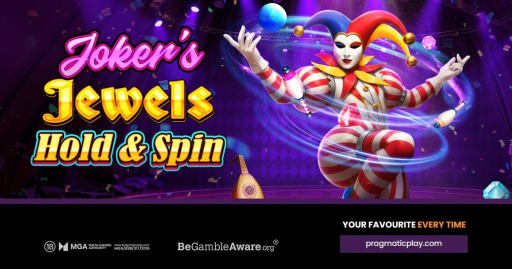

Joker's Jewels Hold & Spin (Pragmatic Play): fecha de lanzamiento, RTP y premio máximo
Publicado el 4 de octubre de 2026. Pragmatic Play abrió 2026 con Joker's Jewels Hold & Spin: una tragamonedas retro 5x3 donde el icónico comodín regresa, combinando premios clásicos de hasta 1.000x con respins Hold & Spin y un premio máximo de 10.000x.

Arte oficial del juego: Pragmatic Play.
Datos clave
| Proveedor | Pragmatic Play |
|---|---|
| Lanzamiento | 2026 (primer lanzamiento del año de Pragmatic Play) |
| Formato | Rodillos 5x3, 5 líneas de pago fijas |
| RTP | 96,52 % |
| Premio máximo | 10.000x la apuesta |
| Volatilidad | Alta |
| Apuestas | 0,05 - 240 |
| Bonos | Hold & Spin: 3+ símbolos Money activan 3 respins, el contador se reinicia con cada nuevo símbolo Money; los símbolos Money pagan hasta 5.000x cada uno; parrilla llena de símbolos Money otorga el premio máximo de 10.000x |
La fecha de lanzamiento y los números clave coinciden en los medios consultados (enlaces abajo). Revisa el panel del juego en tu casino para ver la versión exacta del RTP.
El icónico comodín regresa
Joker's Jewels Hold & Spin es una versión potenciada de la popular tragamonedas Joker's Jewels de Pragmatic Play. El juego 5x3 apuesta por una atmósfera retro con visuales de neón y una banda sonora de circo, manteniendo el acabado moderno que esperan los jugadores.
El juego base funciona con 5 líneas de pago fijas y símbolos de temática de bufón: bolos de malabares, laúdes y zapatos de bufón, entre otros. Conseguir de 3 a 5 símbolos iguales en una línea de pago paga hasta 1.000x la apuesta, con el comodín como símbolo de mayor valor.
Cómo funciona el bono Hold & Spin
Tres o más símbolos Money en cualquier posición de los rodillos activan la función Hold & Spin. El bono empieza con 3 respins, y el contador vuelve a 3 cada vez que cae un nuevo símbolo Money. Cada símbolo Money lleva un valor en efectivo: los más comunes son 0,40x, 1x, 2x, 5x y 10x, con valores raros de 20x, 50x, 250x, 1.000x e incluso 5.000x.
Cuando se agotan los respins, todos los valores Money visibles se recogen y se pagan. Llenar las 15 posiciones de la parrilla con símbolos Money otorga el máximo de 10.000x la apuesta.
Irina Cornides, directora de operaciones de Pragmatic Play, dijo: "Joker's Jewels Hold & Spin aporta una visión fresca a un tema clásico, ofreciendo la acción de las tragamonedas clásicas mejorada con la popular mecánica Hold & Spin y un premio máximo de 10.000x."
Dónde jugar
De los casinos que reseñamos, Vave y N1 Casino mencionan a Pragmatic Play entre sus proveedores - revisa el lobby del casino. La disponibilidad varía según el casino y la región, así que confirma que el juego esté listado antes de depositar.
Fuentes
- Pragmatic Play lanza la nueva tragamonedas Joker's Jewels Hold & Spin - comunicado oficial
- Pragmatic Play lanza Joker's Jewels Hold & Spin como su primer juego de 2026 - GambleRss
- Reseña de Joker's Jewels Hold & Spin - Big Win Board
- Joker's Jewels Hold & Spin - datos de la tragamonedas - SlotCatalog